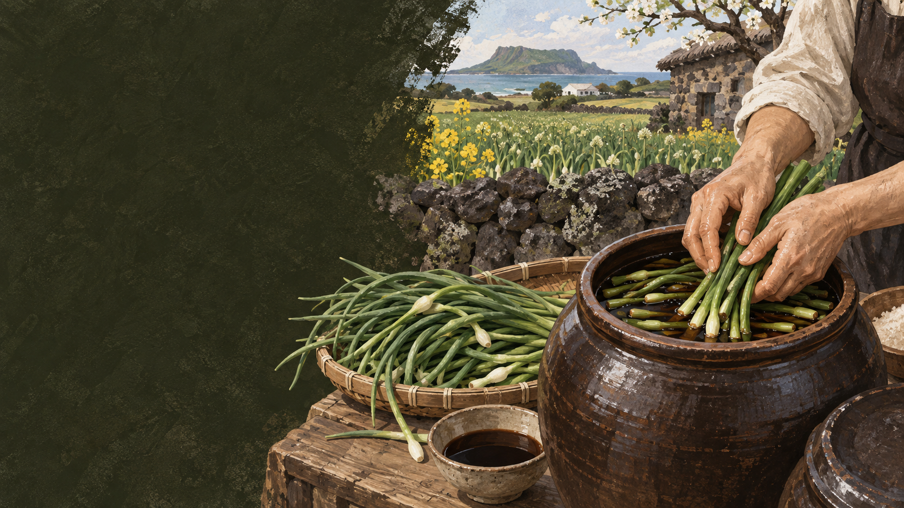

마농
제주어 음식 이름을 보존하는 것은 재료를 바라본 방식을 남깁니다.
 제주에서는 이 재료를
제주에서는 이 재료를
제주 음식의 생활문화를 바탕으로 제작한 기록화 · 생성 이미지
마농은 마늘을 뜻하는 제주어입니다. 예전 마농지는 오늘날 흔한 마늘종만이 아니라 알이 굵어지기 전의 여린 마늘과 줄기를 통째로 뽑아 간장에 절인 음식으로 구술되기도 합니다.
수확철에 한꺼번에 나는 줄기를 버리지 않고 짭짤하고 아삭한 저장반찬으로 바꾸었습니다. 산미와 짠맛, 마늘 향은 삶은 돼지고기의 지방감을 정리해 돔베고기와 잘 어울립니다.
수확철의 짧은 순간부터 손질과 절임, 저장까지 계절의 흐름을 따라갑니다.
여리고 질기지 않은 마늘 줄기를 고릅니다.
뿌리와 거친 잎을 제거하고 씻습니다.
간장이 묽어지지 않게 충분히 말립니다.
식힌 절임장을 재료가 잠기도록 붓습니다.
차갑게 두고 간이 들면 잘라 먹습니다.
제주어 이름과 아삭한 식감, 돼지고기와의 조합을 중심으로 봅니다.
제주어 음식 이름을 보존하는 것은 재료를 바라본 방식을 남깁니다.
알마늘과 달리 씹을 때 섬유질과 풋마늘 향이 또렷합니다.
산미·짠맛·향이 삶은 고기의 지방과 균형을 이룹니다.
유명한 메뉴보다 왜 이런 재료와 방식이 제주 생활에 필요했는지를 먼저 묻습니다.
먹는 부위와 수확 시기, 맛과 쓰임이 어떻게 갈라지는지 비교합니다.
여린 마늘과 줄기 전체
마늘종 또는 풋마늘 줄기
알이 굵기 전 봄
마늘종 수확기
집간장 중심, 집마다 배합
양조간장·식초·당을 배합
상시 밑반찬·고기 곁들임
반찬·상품화
마농지는 먹을 수 있는 부분을 버리지 않는 태도와, 짧은 봄의 맛을 오래 두는 저장 기술을 함께 보여 줍니다.
오늘 마늘종 장아찌와 과거 구술의 마농지가 완전히 같은 재료였는지는 세대·마을에 따라 다르게 기록될 수 있습니다.
마농지의 아삭함은 봄 수확의 시간을 간장 속에 남긴 감각입니다.
마늘대·마늘종·풋마늘은 식물의 부위와 수확 시점이 다릅니다. 인터뷰에서는 실제 재료 사진과 채취 시기를 함께 확인합니다.
지역·가정·생산자에 따라 설명과 조리법이 다를 수 있습니다. 현장 인터뷰를 인용할 때는 당사자의 사용 동의를 받습니다.